CLOTH SIMULATION
Preparing Mesh
Cloth simulation system uses alpha channels of vertices of meshes. Values in the alpha channel represents how much a vertex can move away from its original position. 0.1 of alpha means vertex can be moved 0.1 units from its original position by cloth simulation. If you set zero to alpha value that means that vertex will be fixed to its position and will not be updated by simulation.
| SHADED | VERTEX ALPHA |
|---|---|
| 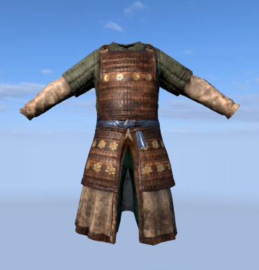 | 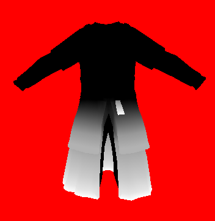 |
Black parts are driven by skinning system while white parts are simulated. It is worth to mention that skinning calculations are done for all vertices whether they are fixed or not. Positions of skinned vertices are used as anchor points for simulated vertices. You can imagine that a simulated vertex can only move inside a sphere with radius R and center C. Here alpha channel of the vertex color is used as radius and skinned position is used as center.
| SHADED | VERTEX ALPHA |
|---|---|
| 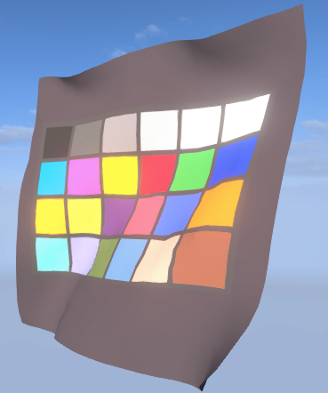 | 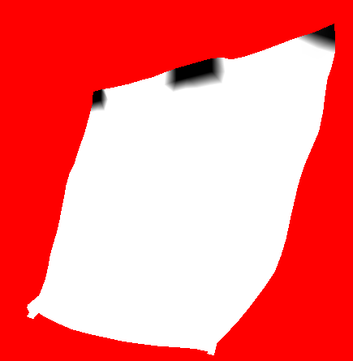 |
Simulation Types
Direct simulation
In direct simulation, vertices of rendered mesh are simulated directly by cloth simulation. This technique can be used for meshes with simple topology(like grid) and small amount of vertices. As the number of vertices increases performance hit of simulation will be greater.
Mapped simulation
In some cases, your mesh may not be suitable for cloth simulation. Some examples are armors with double sided polygons, clothes with more than one layer or meshes with high numbers of polygons. For such cases a separate mesh can be used for simulation. If a separate simulation mesh is used vertices of this mesh are simulated by cloth simulation. Vertices of original mesh will be mapped to simulated mesh and move with them.
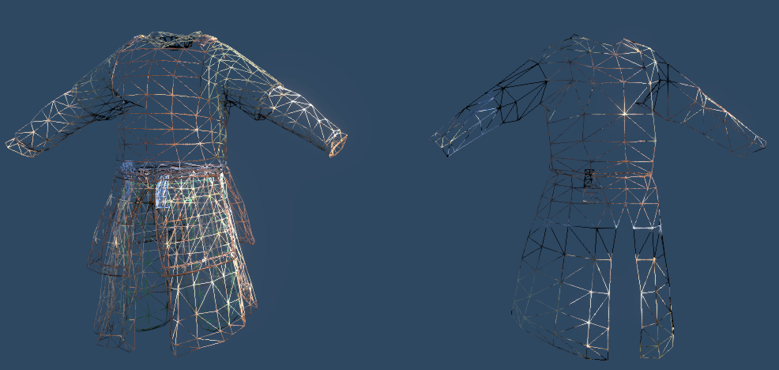
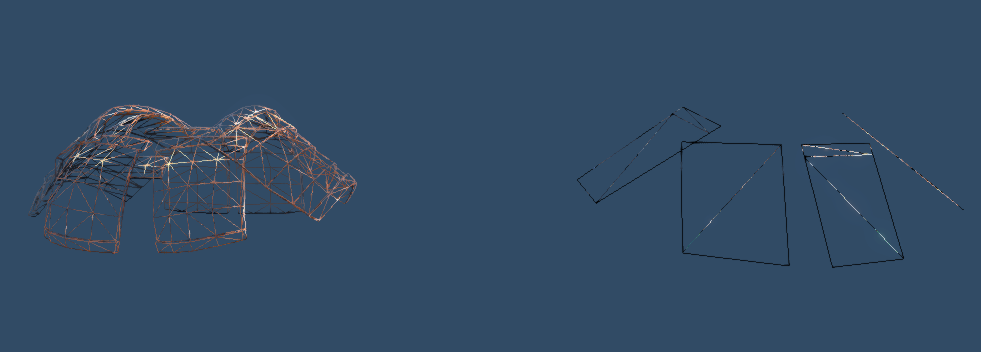
In the above images, meshes on the right side are used for simulation and the left ones are rendered according to simulated results. To achieve realistic results, your simulation mesh should tightly map to render mesh and it must never cover it. In other words, render mesh should never penetrate to simulation mesh. If it does, since collision calculations are done for simulation mesh you may see collision artifacts like penetrating leg to armor.
Cloth Editor
To enable cloth simulation for a mesh some ingame settings must be adjusted. Cloth editor is used to setup a mesh for simulation. Cloth editor can be opened from toolbar menu in editor.
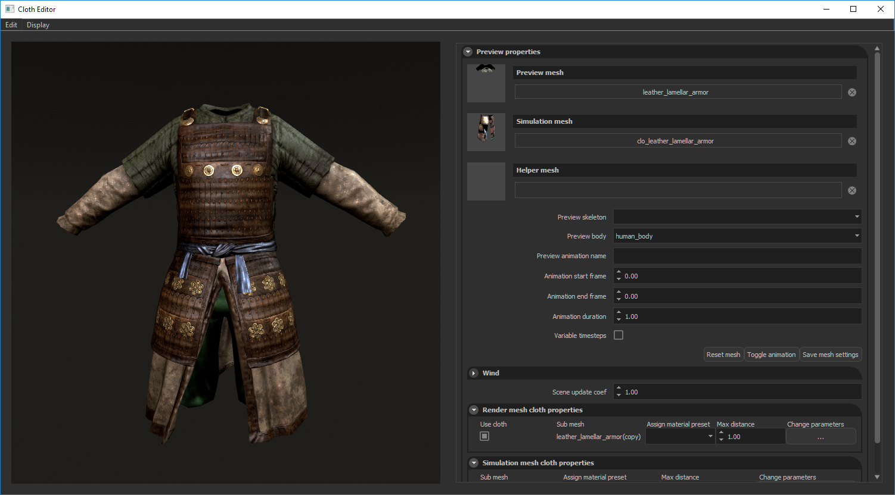
Preview properties
Preview mesh
To start working with a mesh you should select it from Preview mesh menu and select the sub meshes which will be simulated from Render mesh cloth properties panel. If alpha channels of mesh painted properly it should start to be simulated on the preview window.
Simulation mesh
If you want to use a separate simulation mesh, select it from Simulation mesh menu. Alpha channel of this mesh must also be painted because it is the actual mesh being simulated. In this case alpha channel of preview mesh is used to determine if a vertex will be mapped to the simulation mesh or it will be rendered with original skinning data. Alpha values greater than zero means that vertex must be mapped to simulation mesh. Vertices with zero alpha values will use the original skinning data. Since simulation mesh has less polygon count than the original mesh, this can be used to increase skinning quality of original mesh for non-simulated parts.
Helper mesh
You can select a helper mesh to preview your actual simulation mesh with an arbitrary mesh. Selecting a horse mesh for a simulated mane mesh is a good example.
Preview skeleton
If you want to work on a skinned mesh and preview collision capsules and animations, you should select corresponding skeleton.
Preview body
You can assign an existing collision body to your Preview mesh with Preview body menu. Modification of collision bodies can be done from Cloth Bodies panel.
Preview animation name
You can test your cloth with an animation. You must write its name in asset folder, not the one in animations*.xml and its start and end frame numbers and duration. You can start and stop animation with Toggle Animation button.
Scene update coef
Slow motion can be simulated by decreasing this value. Default value is 1 which means all simulations are done normally.
Render mesh cloth properties
You can select which submeshes will be simulated by checking checkbox next to each submesh. Different cloth materials can be assigned to each submesh by Cloth material column. Max distance multiplier is used to scale vertex color paintings of mesh which controls how much a vertex can move away from its original position. 0.5 value of vertex alpha with 3.0 max distance multiplier value means that, that vertex can move 1.5 units away from its original position.
If you are using a separate simulation mesh, max distance value and cloth material of simulation mesh overrides these settings. All submeshes will use same cloth material assigned to simulation mesh.
Simulation mesh cloth properties
If you use a separate simulation mesh, you can adjust its settings from here just like render mesh properties mentioned above. Cloth material and max distance value selected here will be used for all sub meshes of render mesh.
It is important to note that you must save your settings by pressing Save mesh settings button.
Collision Bodies
Collision presets can be created and modified from Collision bodies window. You can open Collision bodies window from Edit > Edit collision bodies menu.
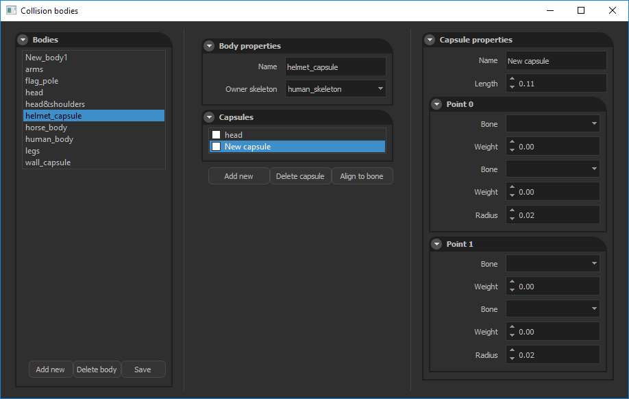
A capsule consists of two end points. These points can be skinned to a skeleton separately by assigning owner bones and weights. One capsule point can be skinned to at most two bones. Like mesh skinning, weights are used to determine influence of that bone on the selected capsule.
Cloth materials
All simulation parameters to customize cloth behaviour is supplied with cloth materials. Cloth material presets can be created and modified from Material templates window.
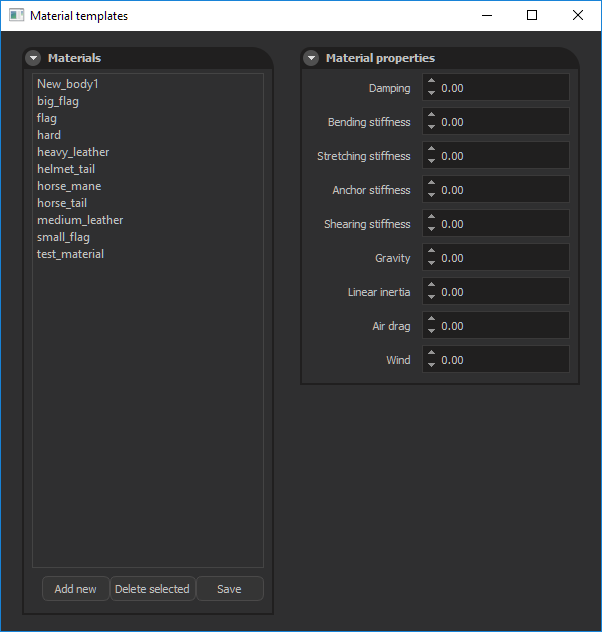
You can open this window from Edit > Edit merial templates menu. Materials shown in this windows are presets so changing these presets does not affect configurations of existing cloth meshes. To change parameters of an existing cloth mesh, you can click Change parameters button in Simulation/Render mesh properties panel and adjust each settings in Mesh specific parameters window.
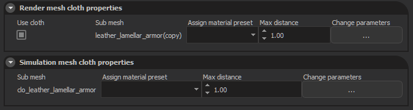
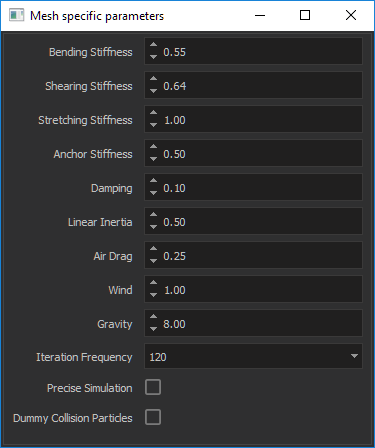
Current parameters are as follows:
Bending, Stretching, Shearing, Stiffness
Determines how much a fabric constraint will resist to the corresponding case.
Anchor Stiffness
This constraint strictly limits the freedom of a vertex. It tries to keep distances constant between simulated and fixed vertices. You can try to increase this value if your mesh stretches too much.
Damping
Dampening values for vertices. Determines the fraction of current frame’s velocity to transfer to the next frame.
Linear Inertia
Since our cloth simulation is done in local space, global frame changes are transferred to cloth virtually. This value determines how much of acceleration of entity will be transferred to cloth. You can test this by adding a cloth mesh into a scene and shake its entity randomly.
Air drag
For a cloth mesh moving with a constant velocity this value determines how much air force will affect its vertices.
Wind
You can control how much wind force the cloth will use. This value is a multiplier for actual wind force of scene. If there is no wind in the scene increasing this value has no effect.
Gravity
Constant gravity force affecting each simulated vertex. You can decrease this value to achieve a silky cloth behaviour.
Iteration Frequency
How many times a cloth mesh will be simulated in a second. You can leave this parameter with its default value unless your mesh has big triangles or it moves so fast that collision capsules can not catch simulated vertices. Increasing this value results in more stable collision behaviour but performance hit also increases linearly.
Precise Simulation
We trade accuracy with performance by doing some compressions during simulation. As a result simulated mesh might move to a different state than its rest state slightly. If this accuracy is important for your mesh, you can enable this option to get more correct results.
Dummy Collision Particles
If simulated mesh has big triangle sizes with respect to collision capsules, capsules may not collide with cloth mesh properly. To overcome this we place dummy vertices in every triangle of mesh. These vertices are not simulated but only used during collision stage. This option has big performance hit so you should avoid enabling this as much as possible.
Cloth Content Files
Our simulation system generates two files with *.tcc and *.tcm extensions. Tcc files contains preprocessed data used by cloth simulation like constraint indices, constraint lengths etc. Tcm files contains mapping data of a render mesh to a simulation mesh. You must commit both these files to Plastic SCM to ensure that nobody will wait for cooking process to complete during scene loading stage.